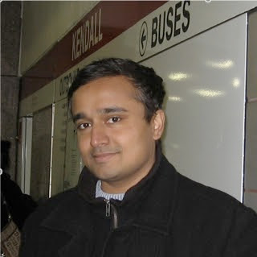
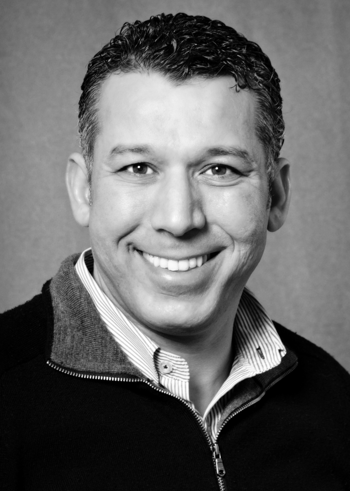
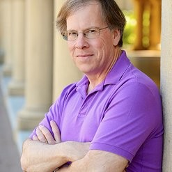
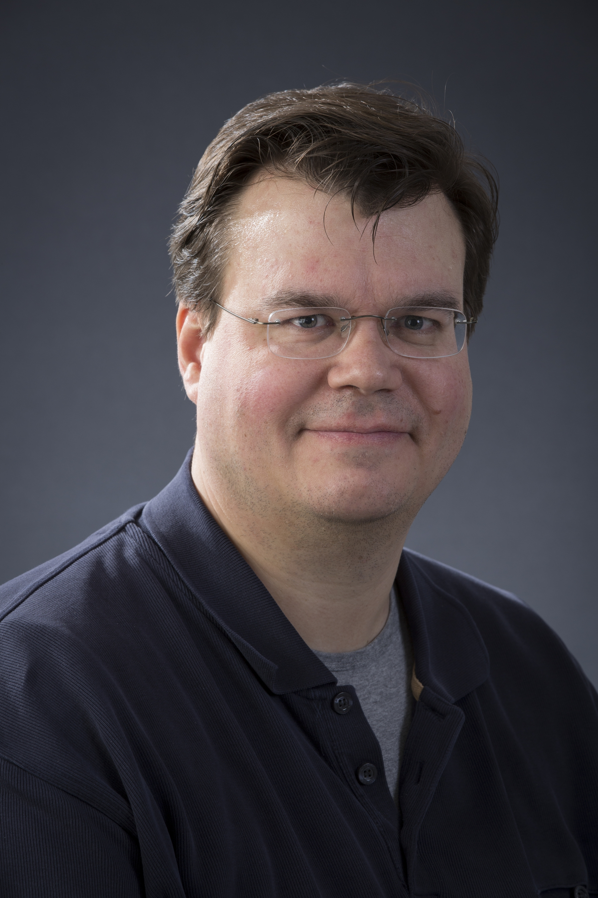
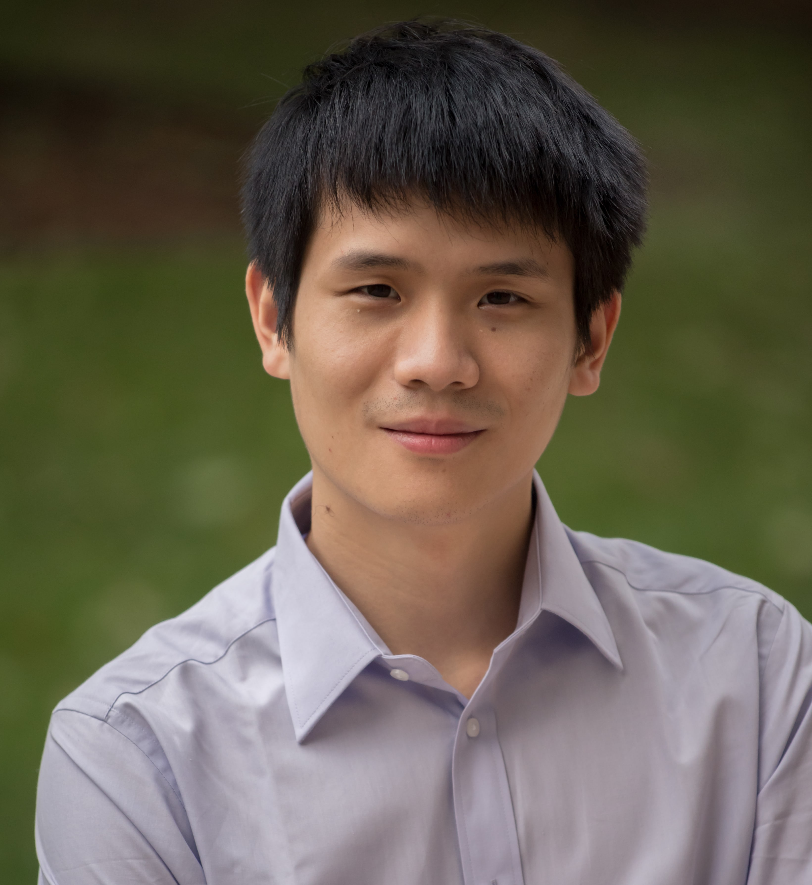
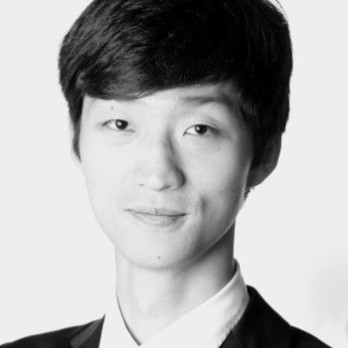
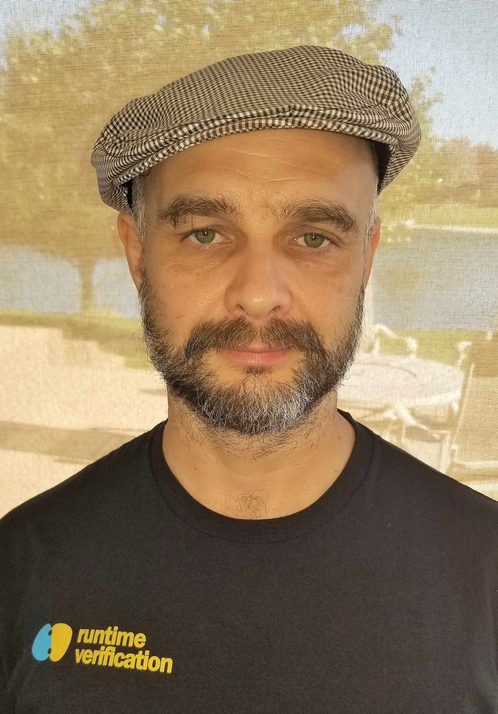
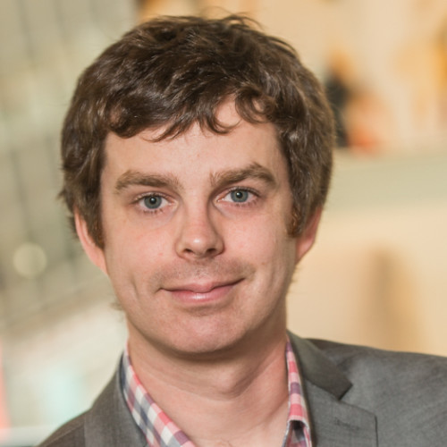
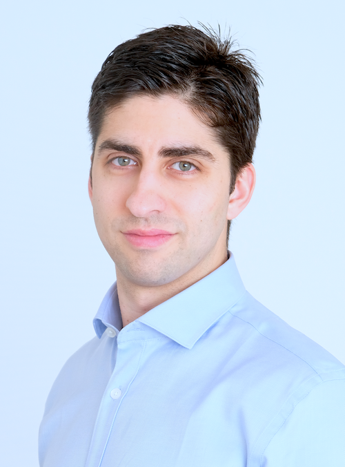
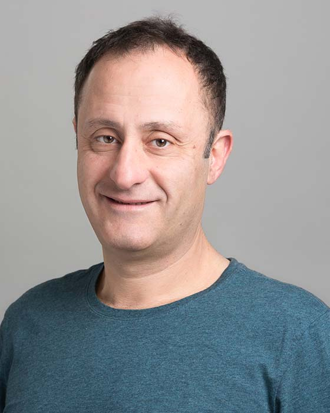

|

Vijay Ganesh |
Bio: Dr. Vijay Ganesh is an associate professor at the University of Waterloo. Prior to joining Waterloo in 2012, he was a research scientist at MIT (2007-2012) and completed his PhD in computer science from Stanford University in 2007. Vijay's primary area of research is the theory and practice of automated mathematical reasoning algorithms aimed at software engineering, formal methods, security, and mathematics. In this context he has led the development of many SAT/SMT solvers, most notably, STP, Z3 string, MapleSAT, and MathCheck. He has also proved several decidability and complexity results in the context of first-order theories. He has won over 25 awards, honors, and medals to-date for his research, including an ACM Test of Time Award at CCS 2016, an Ontario Early Researcher Award 2016, two Google Faculty Research Awards in 2011 and 2013, and a Ten-Year Most Influential Paper citation at DATE 2008. |
|
|

Raouf Boutaba |
Bio: Dr. Raouf Boutaba received a bachelor's degree from the University of Annaba, Algeria in 1988, a M.S. degree
from the Université de Pierre et Marie Curie, France, in 1990, a Magister degree from the University of Annaba in
collaboration with the University of Glasgow, Scotland, in 1993, and a Ph.D. degree from the Université de Pierre
et Marie Curie in 1994, all in Computer Science. Currently, he is a Professor at the David R. Cheriton School of
Computer Science, and Associate Dean of Research in the Faculty of Mathematics at the University of Waterloo, Canada,
and a Distinguished Visiting Professor at the Pohang University of Science and Technology (POSTECH), Korea.
|
|
|

David L. Dill |
Bio: Dr. David L. Dill is a lead researcher at Facebook. He is a computer scientist and academic noted for contributions to formal verification, electronic voting security, and computational systems biology. He is the Donald E. Knuth Professor, Emeritus, in the School of Engineering and Professor, Emeritus, of Computer Science at Stanford University.His research has focused on formal verification, computational biology, and voting technology and policy. His main focus now is formal verification. In formal verification, He worked on many different approaches and applications and made many contributions to that area in automata theory (timed automata), BDD-based model checking, explicit state model checking, CPU verification methods, and decision procedures for quantifier-free logic (SMT solvers). His google scholar profile shows publications in this area. |
|
|
Sergey Gorbunov |
Bio: Dr. Sergey Gorbunov is an Assistant Professor at the University of Waterloo and the Head of Cryptography at Algorand. His interests range from cryptography to design of secure systems, network protocols, and blockchains. He received PhD from MIT, where he was a Microsoft PhD fellow, and advised by Vinod Vaikuntanathan. His dissertation was on designing cryptographic tools for the cloud using lattice-based cryptography for which he received Sprowls Doctoral Thesis Prize for best PhD thesis in CS at MIT. |
|
|

Florian Kerschbaum |
Bio: Dr. Florian Kerschbaum is an associate professor in the David R. Cheriton School of Computer Science at the University of Waterloo (since 2017) and executive director of the Waterloo Cybersecurity and Privacy Institute (since 2018). He has also worked as chief research expert at SAP in Karlsruhe (2005 – 2016) and as a software architect at Arxan Technologies in San Francisco (2002 – 2004). He holds a Ph.D. in computer science from the Karlsruhe Institute of Technology (2010) and a master's degree from Purdue University (2001). He is interested in data security and privacy in data management, machine learning, and blockchains. He extends real-world systems with cryptographic security mechanisms to achieve provable security guarantees. His work has been applied to products for databases, supply chain management and RFID tracking. |
|
|

Fan Long |
Bio: Fan Long is an assistant professor at the University of Toronto. His research interests are programming language, software engineering, systems security, and blockchain. He is involved in the Conflux project for building the next generation blockchain platform. His research projects include Blockchain Scalability, Automatic Patch Generation, Input Filtering and Rectification, and Program Recovery. |
|
|

Richard Ma |
Bio: Richard Ma is CEO and Director of Quantstamp; he manages product strategy, business
development, engineering strategy, and hiring, with a goal of long-term sustainable
success for the blockchain community.
|
|
|

Grigore Rosu |
Bio: Dr. Grigore Rosu is a professor in the Department of Computer Science at the University of Illinois at Urbana-Champaign (UIUC), where he leads the Formal Systems Laboratory (FSL), and is the founder and president of Runtime Verification, Inc (RV). His research interests encompass both theoretical foundations and system development in the areas of formal methods, software engineering and programming languages. Before joining UIUC in 2002, he was a research scientist at NASA Ames. He obtained his Ph.D. at the University of California at San Diego in 2000. He was offered the CAREER award by the NSF, the Dean's award for excellence in research by the College of Engineering at UIUC in 2014, and the outstanding junior award by the Computer Science Department at UIUC in 2005. He won the ASE IEEE/ACM most influential paper award in 2016 (for an ASE 2001 paper) and the RV test of time award (for an RV 2001 paper) for papers that helped shape the runtime verification field, the ACM SIGSOFT distinguished paper awards at ASE 2008, ASE 2016, and OOPSLA 2016, and the best software science paper award at ETAPS 2002. He was ranked a UIUC excellent teacher in Spring 2013, Fall 2012, Spring 2008 and Fall 2004. |
|

Prateek Saxena |
Bio: Dr. Prateek Saxena is the Dean’s Chair Associate Professor in Computer Science at the National University of Singapore. His research is on computer security and privacy. His recent works address problems that intersect security and several other areas: distributed systems, machine learning, programming languages, hardware-rooted security, and formal methods. Several of his research papers have resulted in large-scale deployments in practice, especially in web sandboxing infrastructure for browsers and web application frameworks as well as in public blockchain platforms. He is a co-founder of a group of deep technology companies, including Zilliqa. He has received several awards including the MIT TR35 Asia, a Security & Privacy Award from Google, and the Sakrison award for outstanding dissertation work at UC Berkeley. |
|
|

Steven Stewart |
Bio: Steven Stewart is Co-founder and Chief Technology Officer at Quantstamp. Previously, he worked as a Software Engineer
and Computer Systems Analyst at the Canadian Department of National Defense. He also co-founded GPU computing startup
Many Trees Inc., and has worked as a Software Developer at Magnetic Forensics.
|
|
|

Petar Tsankov |
Bio: Dr. Petar Tsankov is a research scientist at the Secure, Reliable, and Intelligent Systems Lab at ETH Zurich,
and Chief Scientist at ChainSecurity. His work centers around security and privacy (blockchains, networks,
and system security) and combines techniques from the areas of programming languages, machine learning, and
probabilistic programming. As part of his research, he has co-developed several popular system, including
Securify, ChainCode Scanner, DeGuard, DEBIN, AI2, SPIRE, SyNET, NetComplete, and others. He is a co-founder
of ChainSecurity, which brings security to blockchain systems using automated reasoning.
|
|
|

Andreas Veneris |
Bio: Dr. Andreas Veneris is a Connaught Scholar and Professor of Electrical and Computer Engineering (Computer Engineering and Electronics groups) and Computer Science at the University of Toronto. His research interests include the development of CAD tools for the debugging, verification, synthesis and test of smart contracts, digital VLSI circuits and digital systems. He also has interest in theoretical computer science, game theoretical crypto-economics and cryptographic ledger technology. He obtained a PhD from the University of Illinois at Urbana-Champaign, Department of Computer Science, an MSc from the University of Southern California, Los Angeles Department of Computer Science, and an undergraduate diploma from the University of Patras, Department of Computer Engineering and Informatics. He was a visiting faculty at the University of Illinois at Urbana-Champaign in 1998-99. He joined the University of Toronto in August 1999. He held positions at the Athens University of Economics and Business, and the University of Tokyo. |